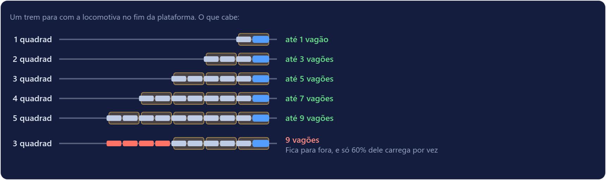

Estações
Os quatro tipos, onde ficam e como se unem.
Os veículos só carregam e descarregam em estações. Há quatro tipos, e eles podem ser unidos numa só.
| Estação | Ferramenta | Onde fica | Preço |
|---|---|---|---|
| Parada | 4 Estradas | Num trecho reto de estrada. | $ 1.200 por quadrado |
| 5 Ferrovia | Em terreno plano ou sobre trilho reto. Até 12 quadrados de comprimento e 4 plataformas lado a lado. | $ 1.600 por quadrado | |
| Doca | 0 Portos | Numa encosta da margem que desça reto até o mar aberto. | $ 2.600 |
| Portos | Um aeródromo de 3 x 2 em terreno plano. | $ 31.200 |
- R gira uma estação antes de você colocá-la.
- Arraste uma estação de trem ao longo dos trilhos para aumentar o comprimento e para o lado para ter mais plataformas. Os trens escolhem sozinhos uma plataforma livre.
- Ônibus e caminhões fazem fila um atrás do outro, e escolhem um quadrado livre de uma parada que tenha vários.
- Um trem mais comprido que a plataforma também para, mas os últimos vagões ficam para fora, na linha de trás, e ele carrega e descarrega mais devagar. A janela de compra e a janela do trem avisam. Numa plataforma cabem dois vagões por quadrado, menos um pela locomotiva: 3 quadrados comportam 5 vagões.
- Uma estação recebe o nome da cidade mais próxima.
- Cada quadrado de estação custa $ 30 por mês de manutenção.
Qual o comprimento da plataforma?


Unir estações
- Construa um quadrado de estação bem ao lado de uma sua e as duas se unem: um nome, uma área de cobertura, uma só pilha de carga esperando.
- É assim que se faz um terminal de integração: uma estação de trem com uma parada de ônibus, uma doca ou um aeroporto colados.
- Também serve para esticar uma área de cobertura e alcançar um pouco mais longe.
- Uma estação não pode se estender por mais de 20 quadrados de ponta a ponta. Um quadrado construído mais longe começa uma estação nova.
A seguir: Área de cobertura e Avaliação das estações.